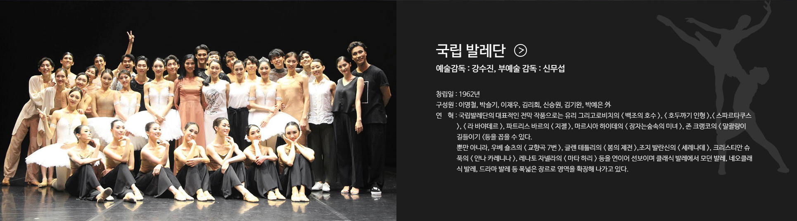

백조의 호수
The Swan Lake
음악 : 표트르 일리치 차이콥스키
안무 : 유리 그리고로비치
미술 : 시몬 바르살라제
조명 : 미하일 소콜로프
지휘 : 제임스 티글
연주 : 코리안심포니오케스트라

발레는 음악과 움직임이 하나가 되어 무대 위에 이야기를 만들어냅니다. 차가운 겨울의 풍경과 아름다운 춤을 한 공간에 담아 겨울의 낭만을 표현합니다.
눈처럼 섬세한 움직임, 겨울처럼 깊은 음악과 함께 특별한 발레 공연을 만나보세요.



The Swan Lake
음악 : 표트르 일리치 차이콥스키
안무 : 유리 그리고로비치
미술 : 시몬 바르살라제
조명 : 미하일 소콜로프
지휘 : 제임스 티글
연주 : 코리안심포니오케스트라

The Nutcracker
원작 : E. T. A. 호프만
음악 : 표트르 일리치 차이콥스키
안무 : 마리우스 프티파
미술 : 시몬 바르살라제
조명 : 드래곤 노트
연주 : 코리안심포니오케스트라

| 일 | 월 | 화 | 수 | 목 | 금 | 토 |
|---|---|---|---|---|---|---|
| 1 | 2 | 3 | 4 | 5 | ||
| 6 | 7 | 8 | 9 | 10 | 11 (금)백조의 호수호두까기 인형 | 12 (토)백조의 호수호두까기 인형 |
| 13 (일)백조의 호수호두까기 인형 | 14 (월)백조의 호수 | 15 (화)겨울 이야기 | 16 (수)겨울 이야기 | 17 (목)겨울 이야기 | 18 (금)백조의 호수호두까기 인형 | 19 (토)백조의 호수호두까기 인형 |
| 20 (일)백조의 호수호두까기 인형 | 21 (월)겨울 이야기 | 22 (화)겨울 이야기 | 23 (수)겨울 이야기 | 24 (목)호두까기 인형 | 25 (금)호두까기 인형 | 26 (토)호두까기 인형 |

일시 : 2020.12.13 ~ 2020.19.20
장소 : 서울 예술의전당 오페라하우스
관람시간 : 160분
관람등급 : 초등학생 이상
가격 : R석 80,000원 · S석 50,000원 · A석 30,000원
할인 : 인터파크 회원 20% 할인, 국가유공자·장애인 할인
지그프리트 왕자와 오데트 공주의 사랑을 그린 클래식 발레. 섬세한 군무와 차이콥스키의 음악이 어우러지는 작품입니다.
| 구분 | 19일(토) 11시 | 20일(일) 10시 | 공주시 |
|---|---|---|---|
| 오데트&오딜 | 박지수 | 김리현 | 오민서 |
| 지그프리트 | 허성 | 박성진 | 우진 |
| 로트바르트 | 이재우 | 박찬 | 김기태 |